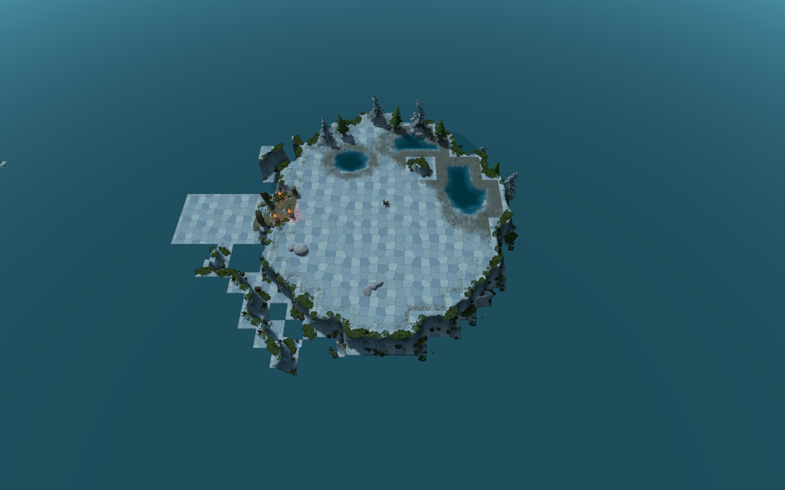
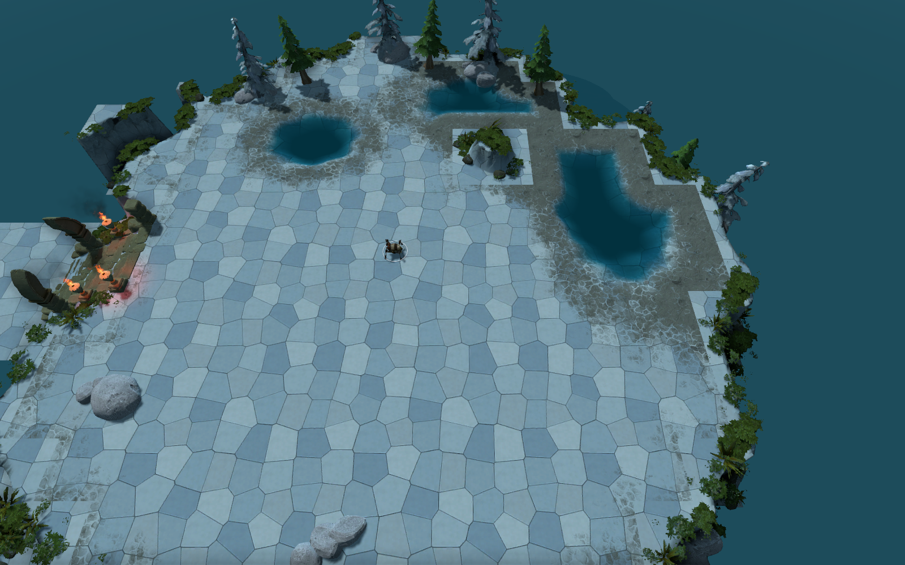
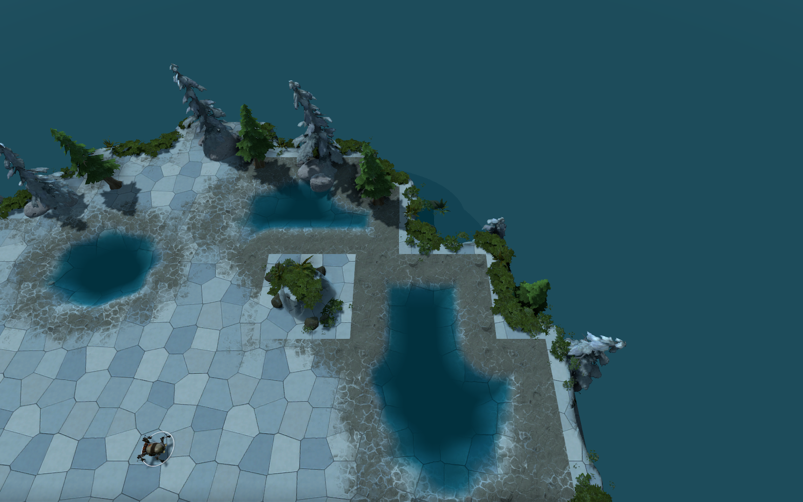
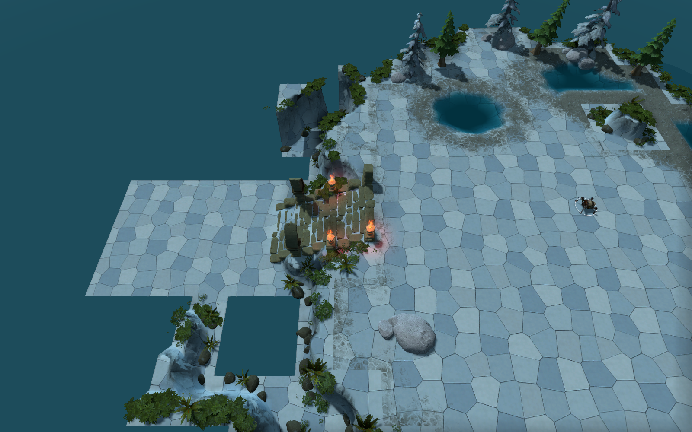

自然石岸 · 首版实机样板
冷青灰石地、局部浅水与缓坡岸边，保留中央活动空间及西侧入口。本页为实际游戏截图。
打开已确认的概念参考图。当前为首版材质与水岸样板，石地风化、岸边碎石层次及远景仍比概念图简化。
样板地图：survival_basin_natural.vmap。你手工修改的 survival_basin_native.vmap 保留。

单平台整体
冷色石地与开放场地
浅水与湿润岸边
保留的原生入口